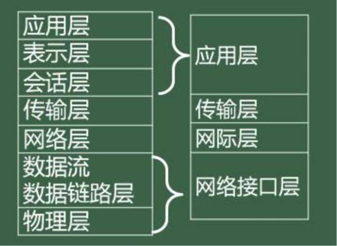

计算机基础
计算机的诞生
ENIAC
ENIAC 是在第二次世界大战，美国军方为了精确计算新式火炮的弹道轨迹而研制的。
- 1946 年 2 月 14 日诞生
- 世界上第一台电子数字积分计算机
- 美国宾夕法尼亚大学
- 17468 个真空电子管、1500 个继电器、70000 只电阻以及其他各类电子元件，功率 150 千瓦
- 占地约 170 平方米，重达 30 吨
- 使用十进制表示数据，没有使用存储程序和程序控制原理
EDVAC
- 1945 年由冯·诺伊曼、莫奇利、埃克特等提出，1951 年完成
- 电子离散变量自动计算机
- 使用二进制表示数据
- 采用存储程序和程序控制
- 由运算器、控制器、存储器、输入设备、输出设备 5 部分组成
EDSAC
- 1949 年 5 月 6 日首次试运行成功
- 电子延迟存储自动计算器
- 使用二进制表示数据
- 采用存储程序和程序控制
- 由运算器、控制器、存储器、输入设备、输出设备 5 部分组成
计算机的发展
| 分代 | 电子元件 | 运算速度 |
|---|---|---|
| 第一代 (1946-1957) |
电子管 | 几千次 |
| 第二代 (1958-1964) |
晶体管 | 几十万次 |
| 第三代 (1965-1970) |
中小规模集成电路 | 几百万次 |
| 第四代 (1971 年至今) |
大规模/超大规模集成电路 | 上亿次甚至亿亿次 |
计算机的发展趋势
- 巨型化
- 微型化
- 网络化
- 智能化
计算机的特点
- 运算速度快
- 计算精度高
- 具有记忆和逻辑判断功能
- 具有自动执行功能
计算机的分类
按照性能划分
- 巨型机
- 大型机
- 小型机
- 微型机
- 工作站
在 2017 年 6 月进行的世界前 500 强高性能计算机（Top500）测试中，我国国家并行计算机工程技术研究中心研发的“神威· 太
湖之光”巨型机排名第一，峰值速度达到每秒 12.5 亿亿次浮点运算。
按照处理的数据划分
- 数字计算机
- 模拟计算机
- 数模混合计算机
目前日常生活应用的计算机多为数字计算机
按照功能用途划分
- 通用计算机
- 专用计算机
计算机的应用
-
科学计算
-
过程检测与控制
-
数据处理
-
计算机辅助系统
计算机辅助系统指通过人机对话，使计算机辅助人们进行设计、加工、计划和学习等工作
类别 简写 计算机辅助设计 CAD 计算机辅助制造 CAM 计算机辅助测试 CAT 计算机辅助教学 CAI 计算机辅助教育 CBE 计算机管理教学 CMI 计算机集成制造系统 CIMS 计算机辅助工程 CAE -
多媒体
-
生活工作和学习
计算机系统
- 由硬件和软件构两大系统组成
- 计算机硬件系统包括主机(由 CPU 和内存组成)和外部设备(由外存储器、输入/输出设备)组成
- 计算机软件系统是计算机所需的各种程序、数据及其相关文件的集合，可分为系统软件和应用软件两类

计算机硬件系统
- 运算器
- 控制器
- 存储器
- 输入设备
- 输出设备
微型计算机的主要性能指标
- 主频
- 字长
- 存储容量
- 存取周期
- 运算速度
运算速度是一项综合性的性能指标，单位有 MIPS（每秒百万（106）条指令）和 BIPS（每秒十亿（109）条指令）等
计算机软件系统
软件是指计算机运行所需的程序、数据和有关文档的总和。没有安装任何软件的计算机称为“裸机”，无法完成任何工作。计算机软件系统通常分为系统软件和应用软件两大类

程序设计语言
| 语言种类 | 可读性 | 可移植性 | 执行速度 | 能否被计算机直接执行 |
|---|---|---|---|---|
| 机器语言 | 差 | 差 | 快 | 能 |
| 汇编语言 | 较好 | 差 | 较快 | 不能 |
| 高级语言 | 好 | 好 | 慢 | 不能 |
用高级语言编写的程序称为源程序，是源代码和数据构成的文件。目标程序是指源程序 经过翻译程序翻译后的二进制目标代码文件。可执行文件是链接程序将目标代码链接后生成的可以执行的文件。
数据单位
- 位(bit,b)
- 字节(Byte,B)
字节是计算机中用来表示存储空间大小的基本单位。在计算机中，通常将 8 个二进制组成一个存储单元，称为字节，用大写字母 B 表示。计算机的主存储器容量、磁盘容量都是以字节为单位表示的。
存储器可容纳的二进制信息量称为存储容量。目前，度量存储容量的基本单位是字节，此外，常用的存储容量单位还有 KB（千字节）、MB（兆字节）、GB（吉字节）和 TB（太字节）。存储容量计量单位之间的换算关系如下：
1B=8b
1KB=1024B=210B
1MB=1024KB=220B
1GB=1024MB=230B
1TB=1024GB=240B,其中 1024=210。
- 字(word)
字通常取字节的整倍数，是计算机进行数据存储和处理的运算单位。字和计算机中的字长概念相关，字长是指计算机同时处理信息的二进制的位数，具有这一长度的二进制数则被称为计算机中的一个字。计算机按照字长可以分为 8 位、16 位、32 位和 64 位机，例如，在 64 位机中，一个字则含有 64 个二进制位。
数制转换
概念
数制是用一组固定的数字和一套统一的规则来表示数目的方法。其中，十进制主要作用于计算机的输入输出，实现人机交互；二进制是计算机内部所采用的数制；八进制和十六进制是为了方便书写或显示二进制，被看成二进制的缩写形式。
基数和权
一个数无论采用何种进位制表示，都包含两个基本要素：基数和权。
- 基数
基数是指各种进位计数制中允许选用基本数码的个数。例如，十进制的数码有 0~9 共 10 个，因此十进制的基数为 10。 - 权
每个数码所表示的数值等于该数码乘以一个与数码所在位置相关的常数，这个常数称为权或权值。权的大小以基数为底、数码所在的位置的序号为指数的整数次幂。
例如，一个十进制数 3643.76 可表示为：
3643.76=3×103+6×102+4×101+3×100+7×10-1+6×10-2
在这个数中，有些相同的数字由于处在不同的位置，他们代表的数值大小也不同，如千位的 3 和个位的 3 大小就不一样。各位数值的大小由权值决定，该数的权值从左到右分别是 103、102、101、100、10-1、10-2，此表示也称为位权展开式。
数值的表示
| 进位制 | 基数 | 基本符号(数码) | 权 | 表示 |
|---|---|---|---|---|
| 二进制 | 2 | 0,1 | 2 | B |
| 八进制 | 8 | 0-7 | 8 | O |
| 十进制 | 10 | 0-9 | 10 | D |
| 十六进制 | 16 | 0-9, A-F | 16 | H 或 0x |
数制转换
r 进制转换为十进制数
对于任意 r 进制数，均可以先写出它的位权展开式，然后在按十进制进行计算即可将其转换为十进制数。
例如：
(1111.11)B=1×23+1×22+1×21+1×20+1×2-1+1×2-2=15.75
(543.2)O=5×82+4×81+3×80+2×8-1=355.25
(A10B.8)H=10×163+1×162×0+161+11×160+8×16-1=41227.5
十进制数转换为 r 进制
十进制数的整数部分和小数部分在转换时需作不同的计算，分别求值后在组合。
整数部分：采用“除 r 取余，先余为低，后余为高”法。即用十进制的整数反复地除以 r，记下每次得到的余数，直到商为 0，然后将所得到的余数倒排即为 r 进制各位的数码。
小数部分：采用“乘 r 取整，先整为高，后整为低”法。即用十进制的小数乘 r，得到一个乘积，将乘积的整数部分取出来，将乘积的小数部分再乘以 r，重复以上过程，直到小数部分为 0，然后将所得到的整数正排即为转换结果。
例如：将十进制数 100.125 转换为二进制数。先对整数 100 进行转换：

由上得出，100D=1100100B。
对小数部分 0.125 进行转换：

由上得出，0.125D=0.001B
最终得出，100.125D=1100100.001B。
二进制、八进制、十六进制数的相互转换
由于二进制、八进制、十六进制之间存在特殊关系：23=81，24=161，即 1 位八进制数相当于 3 位二进制数，1 位十六进制数相当于 4 位二进制数，因此转换方法就比较容易。
八进制和十六进制不能直接互相转换
二进制数与八进制数的相互转换
二进制数转换成八进制数的方法是：将二进制数从小数点开始，对二进制整数部分向左每 3 位分成一组，不足 3 位的向高位补 0 凑成 3 位；对二进制小数部分向右每 3 位分成一组，不足 3 位的向低位补 0 凑成 3 位。每一组 3 位二进制数，分别转换成八进制数码中的一个数字，全部连接起来即可。
例如：11111101.1011B
| 二进制三位分组 | 011 | 111 | 101. | 101 | 100 |
|---|---|---|---|---|---|
| 转换为八进制数 | 3 | 7 | 5. | 5 | 4 |
因此 11111101.1011B=375.54O
将八进制数转换成二进制数
将每一位八进制数转换成相应的 3 位二进制数，依次连接起来即可。
例如：375.54O
| 八进制数 | 3 | 7 | 5. | 5 | 4 |
|---|---|---|---|---|---|
| 转换为二进制数 | 011 | 111 | 101. | 101 | 100 |
因此 375.54O=11111101.1011B
二进制数与十六进制数的相互转换
二进制数与十六进制数的转换，与二进制数和八进制数的转换类似，只不过是每 4 位二进制数与 1 位十六进制数的相互转换。
例如：11111101.1011B
| 二进制四位分组 | 1111 | 1101. | 1011 |
|---|---|---|---|
| 转换为十六进制数 | F | D. | B |
将十六进制数转换成二进制数
将每一位十六进制数转换成相应的 4 位二进制数，然后依次连接起来即可。
例如：11111101.1011B
| 十六进制数 | F | D. | B |
|---|---|---|---|
| 转换为二进制数 | 1111 | 1101. | 1011 |
因此 FD.BH=11111101.1011B
字符的编码表示
西文字符编码
西文字符编码最常用的是 ASCII（美国信息交换标准代码）字符编码，该编码标准已经被国际标准化组织（ISO）指定为国际标准，是国际上使用最广泛的一种字符编码。标准的 ASCII 码采用 7 位二进制编码，它可以表示 27 即 128 个字符。
计算机的内部存储与操作常以字节为单位，即 8 个二进制为单位，因此一个 ASCII 码在计算机内实际是用一个字节（8 位）表示，正常情况下，最高位为 0。在需要奇偶校验时，这一位可用于存放奇偶效验的值，此时称这一位为效验位。
ASCII 编码，编码范围从 0000000B-1111111B。
编码值 0~31（0000000-0011111）不对应任何可印刷字符，通常为控制符，用于计算机通信中的通信控制或对设备的功能控制；编码值 32（0100000）是空格字符，编码值 127（1111111）是删除控制 DEL 码；其余 94 个字符为可印刷字符。在这些字符中，从 0~9、从 A~Z、从 a~z 都是顺序排列，逐次增加 1 的，有利于计算得出 ASCII 码值，并且小写字符比对应大写字符的码值大 32，这有利于大、小写字母之间的编码转换。
由上 ASCII 码值表述可知，控制符<空格字符<数字字符<大写字母<小写字母。
汉字字符编码
计算机中汉字的表示也是用二进制编码，根据应用目的的不同，汉字编码分为输入码（外码）、国标码、机内码和字形码。汉字编码的转换过程如下图：

汉字输入码
汉字输入码又称为汉字外码，是一种用计算机标准键盘的不同排列组合来对汉字的输入进行的编码。目前汉字输入编码的研究和发展迅速，已有上百种汉字输入编码法。衡量一个输入编码法的好坏应有以下要求：编码短，可以减少击键的次数；重码少，可以实现盲打；好学好记，便于学习和掌握。但现在还没有一种全部符合上述要求的汉字输入编码方法。目前常用的汉字编码主要分成为以下三类。
- 音码
主要是以汉语拼音为基础的编码方案，如全拼、双拼、简拼和智能 ABC 等。音码的重码率高，单字输入速度慢，但容易掌握。 - 型码
型码主要是根据汉字的特点，按汉字固有的形状，把汉字先拆分成部首，然后进行组合，代表有五笔字形法、郑码输入法等。型码重码较少，单字输入速度快，但学习和掌握较难。 - 数字编码
常用的是国标区位码，用数字串输入一个汉字。区位码是将国家标准局公布的 6763 个两级汉字分为 94 个区，每个区分 94 位，实际上把汉字集排列成二维数组的形式，行为区，列为位，每个汉字在数组中的下标就是区位码。区码和位码各用两位十进制数表示，因此输入一个汉字需要按键 4 次。例如“中”字位于第 54 区 48 位，区位码为 5448.数字编码输入的优点是无重码，与内部编码的转换比较方便，缺点是代码难以记忆。
为了提高输入速度，输入方法现已走向了智能化，智能化方向是基于模式识别的语音识别输入，手写输入或扫描输入。
汉字国标码
汉字国标码是我国 1980 年发布的《信息交换用汉字编码字符集—基本集》（代号为 GB2312-80），是中文信息处理的国家标准，也称汉字交换码，简称 GB 码。国标码对汉字进行编码时，每个汉字的编码占两个字节。国标码使用了每个字节的低位 7 位进行编码，每个字节最高位仍为“0”，最大可容纳 128×128=16384 个汉字集字符。根据统计，把最常用的 6763 个汉字分成两级：一级汉字有 3755 个，按拼音字母排序排列；二级汉字有 3008 个，按偏旁部首排列排序。
汉字机内码
汉字在计算机内部使用的编码就是汉字机内码，又称汉字内码。每个汉字内码占用两个字节，并且每个字节的最高位为 1，这是为了避免汉字的内码与英文字符编码（ASCII 码）发生冲突，容易区分汉字编码与英文字符编码，同时为了用尽可能少的存储空间来表示尽可能对的汉字而做出的约定。
汉字机内码的计算公式：
汉字机内码 = 汉字国标码+8080H = 区位码+A0A0H
汉字字形码
汉字字形码也叫汉字字模或汉字输出码，用于汉字在显示屏或打印机输出。汉字字形码通常有两种表示方法：点阵式和矢量式。
点阵式表示字形时，将汉字图像一样置于网状方格上，每格是存储器中的一个位（bit）。例如，16×16 点阵是在纵向 16 点、横向 16 点的网状方格上写一个汉字，有笔划的格对应 1，无笔划的格对应 0。点阵式包括 16×16 点阵、24×24 点阵、32×32 点阵、48×48 点阵等，点阵越大，描述的字形越细致美观，质量越高，所占存储空间也越大。在计算机中，8 个二进制位组成一个字节，它是度量空间的基本单位。一个 16×16 点阵的字形码需要 16×16/8=32 字节的存储空间，即
点阵字形码所占字节数=点阵行数 × 点阵列数/8
矢量式是描述汉字字形的轮廓特征，当要输出汉字时，字形和大小与计算机的分辨率无关，可以产生高质量的汉字输出，并节省存储空间。用矢量式记录的字体可以任意放缩甚至变形，而不用担心会出现锯齿状的边缘。
汉字字形数字化后，以二进制文件的形式存储在存储器中，所有汉字的输出码就构成了汉字字形库，简称汉字库。
BCD 码
计算机内部采用二进制表示和处理数据。因此，在计算机中输入和输出数据时，就要进行从十进制到二进制和从二进制到十进制的转换处理。人们通常采用把十进制数的每一位分别写成二进制数形式的编码，称为 BCD 码。
BCD 编码的方法很多，通常采用的是 8421 编码，其方法是用四位二进制数表示一位十进制数，自左至右每一位对应的权是 8、4、2、1.四位二进制数有 0000~1111 十六个状态，只取 0000~1001 十种状态，而 1010~1111 六个状态没有意义。
| 十进制数 | 8421 |
|---|---|
| 0 | 0000 |
| 1 | 0001 |
| 2 | 0010 |
| 3 | 0011 |
| 4 | 0100 |
| 5 | 0101 |
| 6 | 0110 |
| 7 | 0111 |
| 8 | 1000 |
| 9 | 1001 |
| 10 | 0001 0000 |
原码、反码、补码和真值
真值
具体数值，例如：
11100110B
2351O
910D
382AEH
原码、反码、补码
首位是符号位，0 正 1 负
八位原码和反码的范围是-127 ～ +127，而八位补码是-128 ～ +127
为了计算机运算方便，解决在计算机内部数的正负符号和小数点运算问题
原码
正数：与真值的二进制一样，首位是 0，不够八位补零
负数：与真值的二进制一样，首位是 1，不够八位补零
反码
正数：与原码相同
负数：原码符号位不变，其余取反
补码
正数：与原码相同
负数：在反码基础上+1
计算机信息安全
基础
信息安全是一门涉及计算机科学、网络技术、通信技术、密码技术、信息安全技术、信息论等多种学科的综合性学科。国际标准化组织已明确将信息安全定义为“信息的完整性、可用性、保密性和可靠性”。
信息安全的目标：
| 目标 | 阐述 |
|---|---|
| 可靠性 | 可靠性是网络信息系统能够在规定条件下和规定的时间内完成规定的功能的特性。 |
| 可用性 | 可用性即网络信息系统在需要时，允许授权用户或实体使用的特性；或者是网络信息系统部分受损或需要降级使用时，仍能为授权用户提供有效服务的特性。 |
| 保密性 | 保密性是防止信息泄露给非授权个人或实体，只允许授权 用户访问的特性。 |
| 完整性 | 完整性是信息在未经合法授权时不能被改变的特性，也就是信息在生成、存储或传输过程中保证不被偶然或蓄意地删除、修改、伪造、乱序、插入等破坏和丢失的特性。 |
关键技术
密码技术
- 对称式加密
- 非对称式加密
数字证书技术
数字证书以密码学为基础，采用数字签名、数字信封、时间戳服务等技术，在 Internet 上建立起有效的信任机制。他是一种电子身份证，以保证网上银行和电子交易及支付的双方都必须拥有合法的身份，并且在网上能够有效无误地进行验证。数字证书是包含用户身份信息的一系列数据，是一种由权威数字证书认证中心（AC）发行的权威性的电子文档。
随着 Internet 的普及，各种电子商务活动和电子政务活动飞速发展，数字证书具有安全性、保密性等特点，可有效防范电子交易过程中的欺诈行为，已经广泛地应用到各个领域之中，目前主要包括网上银行、电子商务、电子政务、网上招标投标、网上签约、网上订购、网上公文传送、网上缴费、网上缴税、网上炒股等。
防火墙技术
定义
防火墙是一个把互联网与内部网隔开的设施，是一种计算机硬件和软件的组合，它使 Internet 与内部网之间建立起一个安全关卡，从而保护内部网络免受非法用户的侵入，是保证网络安全的最重要设施。防火墙技术简单说就是一套身份认证、加密、数字签名和内容检查为一体的安全防范措施。用户可以防止一些木马、黑客、病毒等破坏数据或窃取个人信息的恶性程序进入计算机。
分类
- 包过虑防火墙（网络级防火墙）
- 应用代理防火墙（应用级防火墙）。
优缺点
优点：
防火墙能强化安全策略；防火墙能有效地记录 Internet 上的活动；防火墙能限制暴露用户点；防火墙是一个安全策略的检查站。
缺点：
防火墙不能防范恶意的知情者；防火墙不能防范不通过它的连接；防火墙不能防备全部的威胁；防火墙不能防范病毒。
计算机病毒
定义
计算机病毒(人为的，恶作剧)在《中华人民共和国计算机信息系统安全保护条例》中被明确定义为：“编制或者在计算机程序中插入的破坏计算机功能或者破坏数据，影响计算机使用并且能够自我复制的一组计算机指令或者程序代码。”
计算机病毒是一种由人为编制的起破坏作用的一个程序，一段可执行代码。这种特殊的程序能把自身附着在各种类型的文件上，能够在计算机系统中隐蔽地生存，通过自我无限复制来传播，又常常难以根除。在一定条件下被激活并破坏计算机系统，给计算机造成不可估量的损失。
特征
- 传染性
- 破坏性
- 寄生性
- 隐蔽性
- 潜伏性
- 不可预见性
分类
按传染方式分类
- 引导型病毒
- 操作系统型病毒
- 文件型病毒
按破坏情况分类
- 良性病毒
- 恶性病毒
典型的病毒
- 蠕虫病毒
- 宏病毒(office)
传播途径
- 通过计算机网络
- 通过不可移动的计算机硬件设备
- 通过移动存储设备
- 通过点对点通信系统和无线通道
病毒的清除
- 人工处理
- 反病毒软件
预防
从管理上预防
- 谨慎地使用公用软件或硬件
- 任何新使用的软件或硬件(如磁盘)必须先检查
- 定期检测计算机上的磁盘和文件并及时消除病毒
- 对系统中的数据和文件要定期进行备份
- 对所有系统盘和文件等关键数据要进行写保护
从技术上预防
- 硬件保护
- 软件预防
计算机多媒体技术基础
概念
媒体
表示传输信息的载体，通常指文字、声音、图像、动画和视频等形式。
多媒体技术
指能够同时对两种或两种以上媒体进行采集、操作、编辑、存储的综合处理技术。
多媒体特性
- 多样性
- 交互性
- 集成性
- 数字化
- 实时性
音频
格式
多媒体的声音格式主要有 WAV、MOD、MP3、RA 格式、CDA、MIDI、WMA 等。
其中 WAV、CDA 未经压缩，文件较大；
MIDI 是音乐的标准格式；
MP3、RA 格式、WMA 压缩较大，适合于网络传输。
数字化处理
声波由许多具有不同振幅和频率的正弦波组成。声波在时间上和幅度上都是连续变化的模拟信号，可用模拟波形来表示。
而计算机只能处理 0 和 1 两种状态值，所以必须对连续的模拟声音信号数字化（离散化）。
- 采样
- 量化
- 编码
存储量=采样频率(Hz) × 量化位数(bit) × 声道数 × 时间(s) ÷ 8
其中存储量单位为字节(BYTE)
图像
格式
位图文件格式（.bmp）
JPEG 文件格式（.jpg 或.jpeg）
GIF 文件格式（.gif）
TIFF 文件格式（.tif 或.tiff）
PSD 文件格式（.psd）
PNG 文件格式 (.png)
数字化处理
- 采样
- 量化
- 图像编码压缩
- 无损压缩
对图像中的重复信息压缩，无失真 - 有损压缩
通过去掉图像细节来压缩图像，有失真
- 无损压缩
图像数据量大小（单位字节）=图像的像素总数（m × n）× 图像深度 ÷ 8
图像深度确定彩色图像的每个像素可能有的颜色数，决定了彩色图像中可出现的最多颜色数，若每个像素有 8 位，则最大灰度数目为 2 的 8 次方,即图像能表示 256 种颜色。
视频
视频即运动图像，是由一系列的静态图像按一定的顺序排列组成，每一幅称为帧（Frame）。
MPEG 标准: 由国际标准化组织（ISO）和国际电工委员会（IEC）联合成立的专家组。是目前热门的国际标准，用于活动图像的编码。
格式
AVI 格式（.avi）
MP4 格式（.mp4）
MPEG 格式（.dat、.vob、.asf 等）
MOV 格式（.mov）
RM 格式（.rm、.rmvb）
WMV 格式（.wmv）
多媒体计算机系统的组成
- 声卡：又称音频卡, 是处理音频信号的硬件。
- 视频卡：用来支持视频信号（主要指活动彩色图像信号）的输入和输出 。可实现对语音、图像的采集、压缩和重放。
- 扫描仪：常用的图形、图像、文本等信息的输入设备。
- 数码相机与数码摄像机：获取电子图像、动态影像。
计算机网络
定义与功能
计算机网络技术是通信技术与计算机技术相结合的产物。
计算机网络是将不同地理位置的、具有独立功能的多个计算机系统，通过各种通信设备和线路连接起来，在网络协议和软件的支持下进行数据通信，信息交换和资源共享的系统。
网络的组成
结构上分成两部分
- 负责数据处理的计算机终端
- 负责数据通信处理的通信控制处理设备与通信线路。
逻辑功能上分成两部分
- 资源子网
- 由主计算机系统、终端、终端控制器、连网外部设备、各种软件资源与信息资源组成。
- 通信子网
- 负责全网的数据处理业务，负责向网络用户提供各种网络资源与网络服务。
分类
按网络的覆盖范围划分
- 局域网(LAN)
- 广域网(WAN)
- 城域网(MAN)
按通信介质划分
- 有线网
- 无线网
按网络的使用对象划分
- 专用网
- 公用网
按网络的拓扑结构划分
- 总线拓扑网络
- 星型拓扑网络
- 网状拓扑网络
- 环状拓扑网络
- 树状拓扑网络
局域网常用的网络拓扑结构有：环型、总线型、树型、星型。
网络协议
网络通信协议是指收信者和发信者关于通信方法的约定，包括语法、语义和时序三项内容，英文统称 Protocol。
- 语法
- 指通信的数据格式或者数据表示顺序
- 语义
- 比特流每一部分的含义
- 时序
- 数据的发送速率与同步控制方法
网络体系结构
计算机网络体系结构是网络层次结构和各层协议的集合，对计算机网络所需实现的功能进行了明确的定义。其核心问题是实现不同计算机系统之间的通信。
每层可以使用下层提供的服务，并向其上层提供服务；不同结点的同等层通过协议来实现对等层之间的通信。
OSI/RM 参考模型
| 应用层 | 为用户提供各种服务, 如: 电子邮件协议，通过 port 区分。 |
| 表示层 | 用户信息的编码与加密、压缩等, 如: SSL 安全协议。 |
| 会话层 | 负责在网络中的两节点之间建立、维持和终止通信。 |
| 传输层 | 流量控制、出错重发、数据分段, 如: TCP。 |
| 网络层 | 数据分包。IP 地址寻址、选径、支持网间（异种）互联。 |
| 数据链路层 | 物理(如 MAC)寻址、数据的成帧、流量控制、数据的检错、重发等。 |
| 物理层 | 物理传输介质的机械、电气、功能和规程特性。单位是 bit 比特 |
OSI/RM 并不是一个标准，而只是一个概念性的框架。
TCP/IP 模型（DOD 模型）
TCP/IP 参考模型是计算机网络的祖父 ARPANET 和其后继的因特网使用的参考模型。
ARPANET 是美国国防部 DOD 赞助而研究的网络。后来逐渐地通过租用电话线路连接百所大学和政府部门，使用的参考标准体系结构就是 TCP/IP 参考模型。
TCP/IP 模型分为如下四层：

TCP/IP 协议是目前 Internet 中使用最为广泛的协议。也是事实上的“国际标准”。
TCP/IP 协议
网际层协议
网际层协议主要包括 IP、ICMP、ARP、RARP 等协议，其中 IP 协议是这一层最重要的协议，其最重要的任务是通过互联网传送数据报文。IP 提供的是一种不可靠的无连接报文分组传送服务。
传输层协议
主要有 TCP 和 UDP 协议。
- TCP 提供可靠的、面向连接的传输协议
- UDP 是非面向连接的传输协议。
应用层协议
由于应用种类繁多，应用层协议也有很多，如：
- HTTP(超文本传输协议)：信息浏览
- FTP（文件传输协议）：文件传输协议。
- DNS（域名系统）：域名解析服务。
- SMTP（简单邮件发送协议）：发送 E-Mail。
- POP3（邮局协议 3）：接收 E-Mail。
- Telnet（远程登陆服务协议）：远程登陆服务。
- NNTP（网络新闻传输协议）：网络新闻传输协议。
- DHCP（动态主机配置协议）：IP 地址自动分配。
- BBS（公告牌服务）：公告牌服务。
传输介质和网络设备
传输介质
-
同轴电缆
- 基带同轴电缆
- 宽带同轴电缆
粗同轴电缆（简称粗缆）和细同轴电缆（简称细缆） 目前在计算机网络中的应用已经很少。
-
双绞线
- 非屏蔽双绞线 UTP
- 屏蔽双绞线 STP
目前局域网中常用到的双绞线一般都是非屏蔽的 5 类 4 对（即 8 根不同颜色导线）的电缆线双绞线的两端都应该连接一个名为 RJ-45 的连接器，然后再插入到相应的网络设备
-
光缆
(光纤出现了石墨烯的材质光纤传输速率是实验室的 10000 倍，传输速率是 270PB)（1PB=1024TB）
光纤通信以光波为载体，以光导纤维为传输介质光纤可分为：单模光纤和多模光纤
光纤通信的优点是频带宽、传输容量大、重量轻、尺寸小、不受电磁干扰和静电干扰等 -
无线介质
信号通过空气传输 ，主要包括无线电、微波和卫星通信等
网络设备
- 调制解调器：实现模拟信号与数字信号的转换。
- 网卡：计算机接入网络的硬件设备。
- 集线器：连接多个终端，组建局域网。共享带宽。
- 网桥：不同网段间的连接。
- 交换机：功能类似于网桥，可以通过 MAC 地址表转发数据帧，MAC 地址表可自动学习。独占带宽。
- 路由器：不同子网，异种网络直接的连接。主要负责路径选择与转发。
- 无线 AP:实现有线和无线网络连接的桥梁。
网络设备工作于对应的 OSI 参考模型：
物理层设备：集线器 HuB、中继器 Reapter
数据链路层设备：网桥 bridge、交换机 switch
网络层设备：路由器 Router、三层交换机。
局域网基础
特点
覆盖有限的地理范围
作用
提供高数据传输速率和低误码率的高质量信息传输环境。
决定局域网特性的主要技术要素为网络拓扑、传输介质和介质访问控制方法。易于建立、维护、管理与扩展
美国数字公司,希乐，英特尔，制定以太网，IEEE802 电气与电子工程协会标准
以太网
目前最常使用的局域网标准，根据其不同的传输介质与传输速率又分为多种
其命令规则为：
- X：表示传输速率，单位 Mbps
- Base：表示信号传输方式（基带传输）
- Y：若为数字，表示的最大段的长度（百米计），若为字母表示传输介质类型，如 T、TX 表示双绞线，F 表示光缆
IP 地址和域名
IP 地址
概念
IP 地址是 TCP/IP 网络中实现异种网互联的一个关键技术，是网际层中用于标示通信实体的身份的标识(ID)
IP 地址的组成
IP 的地址长度为 32bit,用点分十进制(dotted decimal)表示。
点分十进制表示方法：
322 位的二进制，8 个一组，形成 4 组，每组二进制转换成十进制
记作：w.x.y.z
每组十进制值的范围为 0 ～ 255，例如：202.113.0.119
IP 地址的结构
- 网络号
- 表示这个地址所属的网络
- 主机号
- 表示这个地址在此网络中的具体主机个体标识。
IP 地址的分类
判断给定 IP 地址所属的类别，可以根据 IP 地址的首个十进制组的数字范围。
一般分为 5 类
- A 类：1 ～ 126
- B 类：128 ～ 191
- C 类：192 ～ 223
- D 类：224 ～ 239
- E 类：240 ～ 247
域名
IP 地址是 Internet 中通信时区分不同主机的标识，但是 IP 地址不容易记忆和书写。为了解决这样的问题，人们又规定了一种字符类型的标识，叫做域名。
域名是一种分层的结构，一般是由一串带点分隔的字符串组成，不同部分的字符串表明了不同的组织级别。通常其格式如下：
如：www.example.com.cn
顶级域
顶级域的划分采用了两种划分模式：
- 组织模式
域名 含义 com 商业机构 edu 教育机构 gov 政府部门 mil 军事机构 net 网络组织 int 国际机构 org 其他非盈利组织 - 地理模式
- cn 代表中国、us 代表美国、uk 代表英国等、jp 代表日本、ru 代表俄罗斯,tw 代表台湾地区、hk 代表香港地区。
因特网基础
简介
Internet 是一个全球性的信息系统；该系统中的计算机由通过全球性的唯一地址逻辑链接而成，该地址是建立在 IP 或其它协议的基础之上的；而这些计算机之间采用 TCP/IP 协议进行通信，并且 Internet 可以为各种用户，包括公共用户和个人用户提供不同的高质量的信息服务。 Internet 是全球最大的广域网。
发展
1969 年，ARPANET 投入使用。（因特网的前身）
1983 年，TCP/IP 协议成为 ARPANET 的标准协议
90 年代初期，随着 WWW 的发展，因特网逐渐走向民用
1994 年，中国正式接入因特网。
万维网（www）
简介
WWW(world wide web)或 WEB 服务。以超文本标记语言（HTML）和超文本传输协议（HTTP）为基础， 以超文本方式组织网络多媒体信息提供交互访问的平台。
WWW 网站中的每一个 WEB 页面都有一个唯一的地址（URL）来表示。URL（统一资源定位器）指定什么协议、哪台服务器和哪个文件等。
组成
URL 由三部分组成：
- 协议类型
- 域名/IP 地址
- 路径及文件名
如：http://（协议类型）ss.edu.cn（域名）/student/network.html(路径和文件名)。http://127.0.0.1/index.html
数据库
概念
数据
数据（data）是对客观事物的逻辑归纳和记录
字段
某一个事物的一个特征，或者说是属性，例如下图的编号，姓名等属性。
记录
事物特征的组合，可以描述一个具体的事物。例如下图画红框的就是一条记录。
表
记录的组合，表示同一类事物的组合。例如下图就是一个表。
数据库
数据库是“按照数据结构来组织、存储和管理数据的仓库”。是一个长期存储在计算机内的、有组织的、可共享的、统一管理的大量数据的集合。
一个库由单个或多个表组成
数据库管理系统
数据库管理系统(Database Management System)是一种操纵和管理数据库的大型软件，用于建立、使用和维护数据库，简称 DBMS
数据库应用系统
数据库应用系统（DBAS）是在数据库管理系统（DBMS）支持下建立的计算机应用系统，由数据库、数据库管理系统、应用程序系统、用户等部分组成。
其他概念
主键
能唯一标识信息的事物，下图张三的信息就全部一样，所以就用编号来唯一标识用户的信息，那么这个能唯一标识的事物叫做主键，这个表的主键就是编号，主键是在同一表内唯一且不能重复的。
组成
- 数据库
- 数据库管理员
- 计算机硬件系统
- 计算机软件系统
数据模型的分类
- 实体(entity)
- 属性(attribute)
- 实体型(entitytype)
- 实体集(entityset)
- 键(key)
- 联系(relationship)
- 域(domain)
范式
第一范式(1NF)
属于第一范式关系的所有属性都不可再分，即数据项不可分。
例如地区字段包含了省市区三个信息，故不符合第一范式。
正确做法应该是将省市区单独分出三个字段来存储。
第二范式(2NF)
第二范式是指每个表必须有一个（有且仅有一个）数据项作为关键字或主键（primary key），其他数据项与关键字或者主键一一对应，即其他数据项完全依赖于关键字或主键。由此可知单主属性的关系均属于第二范式。
第三范式(3NF)
第三范式要求在满足第二范式的基础上，任何非主属性不依赖于其他非主属性，即在第二范式的基础上，消除了传递依赖。
 wechat
wechat alipay
alipay